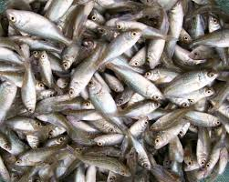
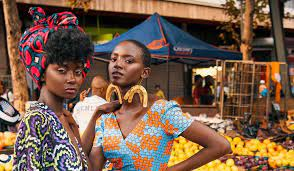

CAPE TOWN LIFESTYLE
-
A HEALTY LIFESTYLE
The good life, eating healthy. That is what people of the Mother City know best. From eating raw green vegetable to making them smoothies. The Cape has sunshine, clear open skies and a people with a genuine zest for life. The Cape is known as the sport and health capital of South Africa. With a calendar of world class sport events, gyms, wellness centers, never far from mountains or the beach - few can argue.The people of the Cape love their sport.They practice yoga, pilates and tai-chi. They enjoy a healthy lifestyle and visit health food stores and restaurants for fresh local food and beverages. These are the people who frequently visit the natural mineral spas and wellness centers in the Cape. These centers offer various types of therapies, some unique to the Cape, and encourage total well-being of body, mind and soul. A perfect way to de-stress in an environment of tranquility and peace.Whether you wish to increase your adrenaline levels or pursue a more relaxed approach to well-being, the Cape has it all. Fitness and wellness is part of a lifestyle that is the Cape.

CAPE'S FISHER-FOLKS
The Cape has, what may sometimes seem like, endless miles of coastline. With the Indian Ocean (with the warm Mozambique current) on the east and the Atlantic Ocean (with the colder Benguela current) on the west, fishing is an integral part of life in the Cape. Along the Cape coast you will find villages like Yzerfontein, Hout Bay, Kalk Bay, Struisbaai and Arniston where, in certain respects, time has stood still. The fishermen who live here, learnt the art of fishing from their fathers, who in turn learnt it from their fathers. You will see the fishermen going out to sea in the early hours of the morning. Their boats brightly painted in all shades of the rainbow. Returning in the afternoon with their bounty. Snoek, Yellow Tail, Mackerel and Cob are just a few of the variety of fish caught. In some places like Hout Bay you will find a thriving fish market. Though modern in appearance, it is still based on a centuries old traditionThe life in a fishing village is a simple life. People work hard for the little reward they receive. But ask any fisherman, there is nothing else he would rather do. Fishing is his life. Fishing is what he knows. A fisherman is what he will be until the day he dies. .
FASHION
Cape Town is a city that has it all, glorious beaches, beautiful winelands and a vibrant nightlife. Known as the mother city of South Africa, Cape Town is a warm, energetic place that consists of trendy artistic and model types. There is no better city for fashion, culture, beauty and maybe even weather as the city enjoys a Mediterranean climate, with clearly defined wet winters and dry summers.Cape Town style is laid-back and casual you will spot people wearing business attire, to athletic wear and even beach items. It’s normal to see people wearing flip flops with jeans and a vest. People don’t wear traditional outfits’ every day though you might spot some people wearing Shwe-Shwe and or African Wax print items. You also won’t see people wearing Safari clothes all over the city this is a myth.
TOURIST ATTRACTIONS
Named after England’s Queen Victoria and her son, Prince Alfred, the V&A Waterfront is centred around the country’s oldest working harbour. This vibrant precinct is home to a shopping centre, a food and craft market, an aquarium, hotels and many other attractions.

Table Mountain is one of Cape Town’s most famous landmarks and forms part of a national park of the same name. It has many popular hiking trails and a cableway that will take you to the summit

The Castle of Good Hope is a historic fort built by Dutch settlers in the 17th century. Today, the star-shaped structure houses an array of military artefacts spanning from the 1600s to the 1800s, as well as colonial art, furniture and ceramics.